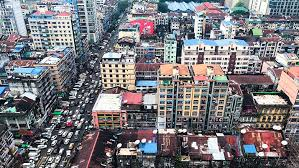
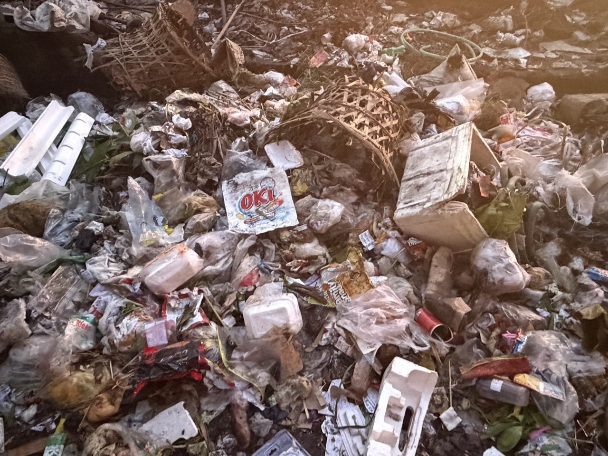
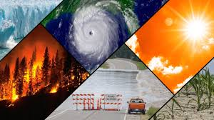
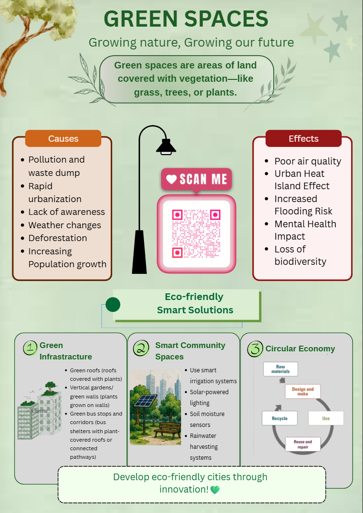
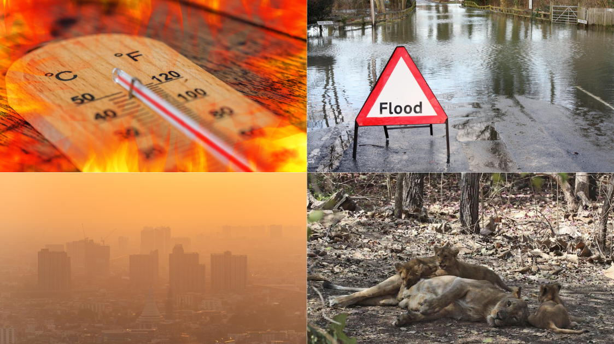

Main Challenges

Urbanization
Cities are growing rapidly, leaving less space for nature.
Explore
Pollution
Waste and harmful gases damage both people and the environment.
ExploreLack of Funding
Without investment, green projects struggle to grow.
Explore
Climate Change
Rising temperatures threaten natural ecosystems everywhere.
Explore
Poor Public Awareness
Many people still underestimate the value of green spaces.
ExploreEffects of these Challenges

Higher Temperature
Higher temperatures are a common effect of urbanization and climate change. Cities become hotter due to concrete buildings, fewer trees, and heat from vehicles. This creates an “urban heat island” effect, making the environment uncomfortable and increasing health risks like heatstroke.
More Flooding
More flooding happens because of poor drainage systems and heavy rainfall caused by climate change. Urban areas with too many buildings and less green space cannot absorb water properly, leading to water accumulation and damage to homes and roads.
Poor Air Quality
Poor air quality is mainly caused by pollution from vehicles, factories, and waste. Harmful gases and dust in the air can cause serious health problems such as breathing difficulties and lung diseases, especially in crowded cities.
Loss of Wildlife
Loss of wildlife occurs when natural habitats are destroyed due to urban development and pollution. Animals lose their homes and food sources, leading to a decrease in biodiversity and imbalance in the ecosystem.
🌿 Real World Example
Real-world examples show how these challenges affect cities around the world. In many large cities, rapid urbanization has led to overcrowding and pollution, making living conditions difficult. Cities like Bangkok and Jakarta often experience severe flooding due to poor drainage and heavy rainfall. In industrial areas, air pollution has become a serious health issue. Deforestation in the Amazon has also caused major wildlife loss, showing how human activities directly impact the environment.
Technology Challenges
The equipments for technology can be quite expensive and they are mostly rare to find. Installing technological stuff can also harm the environment and feel dystopian.
Simple Solutions
We can utilize walls and rooftops from apartments and houses to grow green spaces without using lots of land. Planting more trees along roads can also provide shade and reduce the Urban Heat Island Effect.